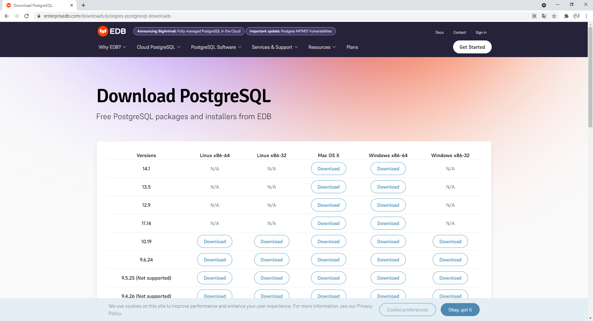

在 Windows 10 安裝 PostgreSQL
開啟網頁 https://www.enterprisedb.com/downloads/postgres-postgresql-downloads：

點擊 Windows x86-64 下的 14.1 版本，如下圖所示：

點擊後應該會看到下圖，此時已經在下載安裝檔：

若尚未開始下載安裝檔，就點擊 Click here if your download does not start automatically. 橘色按鈕。
下載完成後打開安裝檔：

點擊 Next：

點擊 Next：

點擊 Next：

點擊 Next：
這裡要設定超級使用者 postgres 的密碼，輸入密碼後，點擊 Next：

點擊 Next：

點擊 Next：
點擊 Next：
點擊 Next：

安裝中，等待安裝完成。

至此安裝完成，取消勾選後點擊 Finish。
確認是否安裝完成
開啟 Visual Studio Code，如果原本就是開啟的狀態，請先關閉後再開啟。

按下 Ctrl + J，開啟終端機：

輸入 psql -U postgres 嘗試連線到安裝好的資料庫伺服器：
會被要求輸入超級使用者 postgres 的密碼：

輸入好密碼後按下 Enter：
看到上述畫面就代表安裝成功，輸入 exit 離開 PostgreSQL：